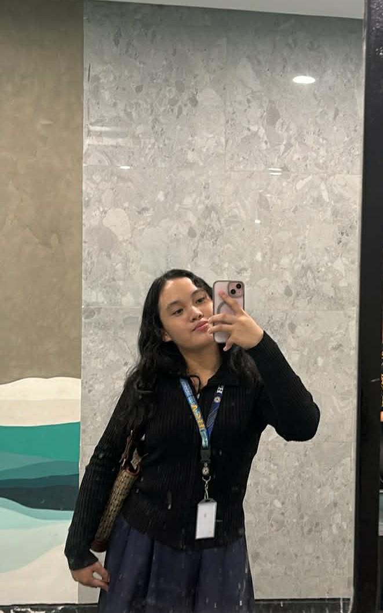

I am Abrianna Kylene Alicante. I am learning web development and designing cute websites.
HTML builds the structure of webpages, while CSS adds colors, fonts, and layouts to make them visually appealing.
Through learning, I discovered the importance of planning before coding and how small design details can improve usability.
Web development has taught me patience, problem-solving, and creativity, helping me bring my ideas to life online.
I enjoy experimenting with colors, fonts, and layouts to create a unique, fun, and readable website that reflects my personality.